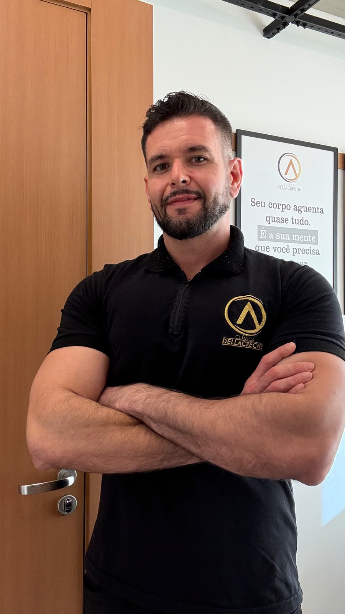
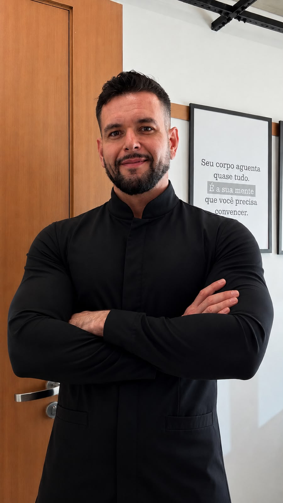
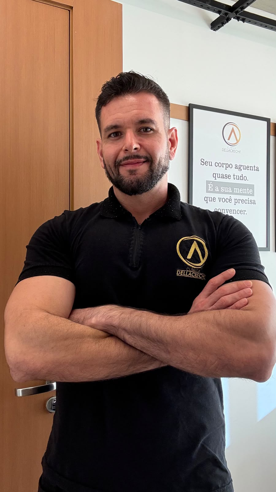

Protocolos nutricionais personalizados para emagrecimento sustentável, ganho de massa, saúde hormonal e alta performance — sem dietas impossíveis.

Adriano Blumer é nutricionista esportivo especializado em estratégias personalizadas para quem busca cuidar da alimentação com saúde e sustentabilidade. O método é baseado em evidências científicas sólidas e adaptado à rotina individual de cada paciente. Sem fórmulas prontas ou restrições radicais, cada plano alimentar é elaborado respeitando os seus objetivos e o seu estilo de vida.
Planejamento nutricional focado nas suas metas e necessidades biológicas.
Perda de gordura com preservação de massa magra, foco na saciedade e reeducação sem efeito sanfona.
Hipertrofia otimizada com cálculo exato de macronutrientes, superávit calórico estratégico e periodização.
Ajustes nutricionais para disposição, qualidade do sono, modulação metabólica e bem-estar geral.
Estratégias de pré, intra e pós-treino para atletas e praticantes de atividade física organizarem a alimentação do treino.
Passo a passo estruturado para acompanhar sua evolução com calma.
Anamnese completa, avaliação de rotina, histórico de saúde, preferências alimentares e metas.
Elaboração de protocolo 100% individualizado, com opções flexíveis e orientações práticas.
Suporte direto para dúvidas do dia a dia e suporte na adaptação da rotina.
Reavaliação periódica e readequação do plano conforme o seu progresso.
Confira um parâmetro inicial simplificado sobre seu índice de massa corporal.
* Atenção: esta estimativa matemática simples não substitui uma avaliação profissional completa com bioimpedância e dobras cutâneas.
Estratégias práticas para melhorar seus hábitos alimentares e performance.
Uma desidratação leve de apenas 2% já pode reduzir seu rendimento no treino e afetar a cognição.
Deixar opções saudáveis pré-prontas reduz escolhas por impulso e ajuda na constância da dieta.
Distribuir o consumo de proteína ao longo das refeições otimiza a síntese proteica muscular.
Acompanhe análises e dicas exclusivas nas redes sociais.
Entenda como funciona um dos suplementos mais estudados do mundo.
O que comer antes de treinar para maximizar a energia e o rendimento.
Bastidores do atendimento, eventos e estrutura.


Respostas para as principais dúvidas sobre o atendimento.
Sim. Na consulta online é feita a mesma anamnese detalhada e envio de diretrizes de medição. A estrutura do plano e o acompanhamento funcionam com o mesmo rigor científico.
Não. A suplementação é indicada apenas quando necessária para complementar a alimentação ou otimizar a performance, de acordo com seus exames e rotina.
O plano alimentar é calculado individualmente e entregue após a consulta, com orientações e lista de substituições.
Agende sua consulta ou tire dúvidas sobre a metodologia de acompanhamento.